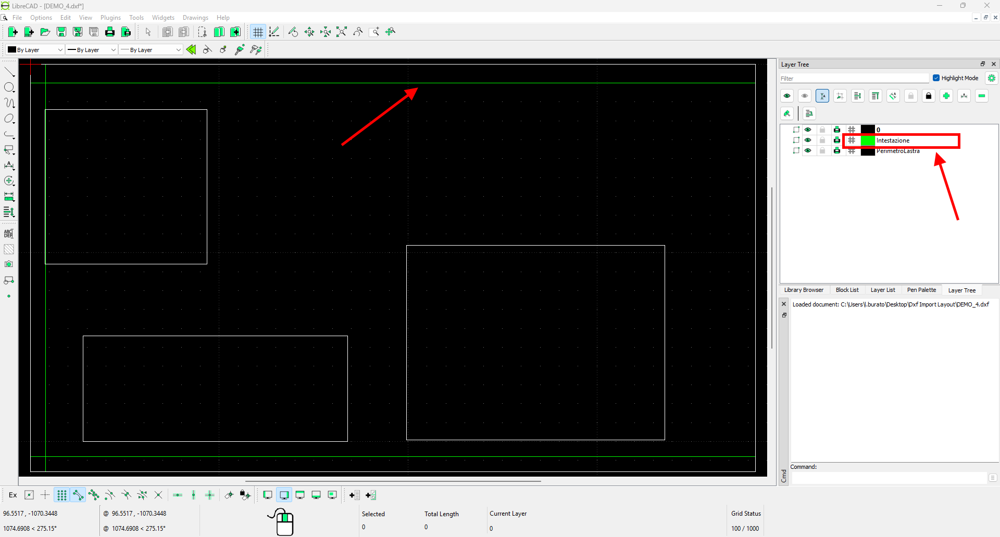
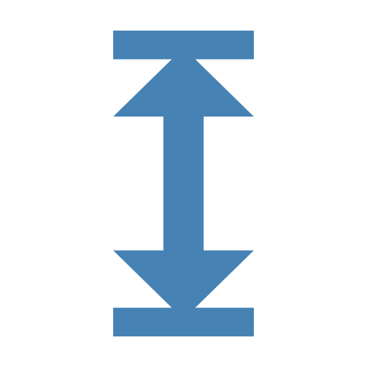

Tramite questa funzione è possibile salvare lo stato della lastra e dei pezzi creati.

Pulsanti
 | Salva |
Come salvare uno stato
Una volta disposti i pezzi sull’area di lavoro, è possibile accedere al pannello per salvare lo stato.

Scegliere il nome con cui si desidera salvare il file all’interno della casella di testo posta in alto.
Confermare la scelta con il tasto salva.
Dalla terza schermata di Parametrix è inoltre possibile salvare lo stato di una lavorazione dopo aver programmato i tagli da eseguire sulla lastra.

Salva come DXF (Opzionale)
Questa funzione permette di salvare lo stato della lastra e dei pezzi in essa contenuti su un file DXF.

Importazione delle intestazioni dal layout DXF
È ora possibile importare in Parametrix una lastra con i relativi tagli di intestazione, disegnandoli in un apposito layer del file DXF.
Il nome del layer dedicato ai tagli di intestazione deve essere definito insieme a un tecnico Donatoni. Una volta configurato, non potrà più essere modificato.
All’interno di questo layer, ogni taglio di intestazione deve essere rappresentato da una linea.
Durante la creazione del file DXF è necessario rispettare le seguenti regole:
deve essere presente il perimetro della lastra;
il perimetro della lastra deve essere rettangolare;
i lati del perimetro devono essere orizzontali o verticali e non devono essere ruotati;
ogni linea di intestazione deve essere parallela a uno dei lati del rettangolo;
per ogni lato deve essere presente al massimo una linea di intestazione;
se per lo stesso lato vengono disegnate più linee, Parametrix utilizzerà soltanto quella più vicina al bordo.

Per importare il file, aprire in Parametrix la pagina Importazione layout da DXF e selezionare il file desiderato.

Impostazioni disponibili
Nella schermata di selezione del file è possibile modificare alcune impostazioni utilizzando i pulsanti situati sotto l’anteprima, sul lato destro dello schermo.
Modalità automatica | |
Modalità calamita | |
 | Distanza calamita |
Esempi
Le immagini mostrano un file DXF contenente il perimetro della lastra, i pezzi e i tagli di intestazione, oltre al risultato ottenuto dopo l’importazione in Parametrix.